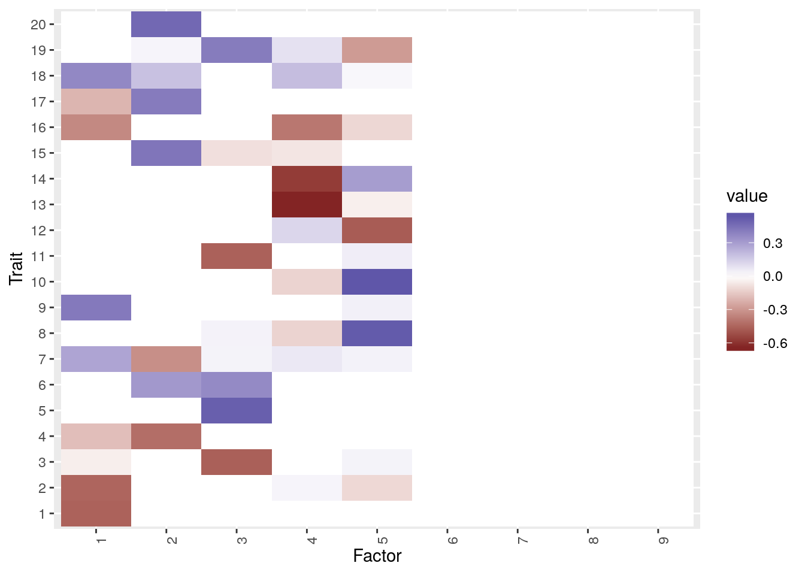

Fixed Factor Correction for Row Correlation
Jean Morrison
2020-05-20
Last updated: 2020-06-18
Checks: 6 1
Knit directory: sumstatFactors/
This reproducible R Markdown analysis was created with workflowr (version 1.4.0.9000). The Checks tab describes the reproducibility checks that were applied when the results were created. The Past versions tab lists the development history.
Great! Since the R Markdown file has been committed to the Git repository, you know the exact version of the code that produced these results.
Great job! The global environment was empty. Objects defined in the global environment can affect the analysis in your R Markdown file in unknown ways. For reproduciblity it’s best to always run the code in an empty environment.
The command set.seed(20190819) was run prior to running the code in the R Markdown file. Setting a seed ensures that any results that rely on randomness, e.g. subsampling or permutations, are reproducible.
Great job! Recording the operating system, R version, and package versions is critical for reproducibility.
- unnamed-chunk-10
- unnamed-chunk-11
- unnamed-chunk-12
- unnamed-chunk-14
- unnamed-chunk-16
- unnamed-chunk-3
- unnamed-chunk-4
- unnamed-chunk-9
To ensure reproducibility of the results, delete the cache directory fixed_factors2_cache and re-run the analysis. To have workflowr automatically delete the cache directory prior to building the file, set delete_cache = TRUE when running wflow_build() or wflow_publish().
Great job! Using relative paths to the files within your workflowr project makes it easier to run your code on other machines.
Great! You are using Git for version control. Tracking code development and connecting the code version to the results is critical for reproducibility. The version displayed above was the version of the Git repository at the time these results were generated.
Note that you need to be careful to ensure that all relevant files for the analysis have been committed to Git prior to generating the results (you can use wflow_publish or wflow_git_commit). workflowr only checks the R Markdown file, but you know if there are other scripts or data files that it depends on. Below is the status of the Git repository when the results were generated:
Ignored files:
Ignored: .Rhistory
Ignored: .Rproj.user/
Ignored: analysis/fixed_factors2_cache/
Ignored: analysis/fixed_factors_cache/
Ignored: analysis/metabo_flash_experiments_cache/
Ignored: analysis/pathway_factors_cache/
Ignored: analysis/simulations_cache/
Ignored: analysis/z_scores_cache/
Untracked files:
Untracked: R/est_R_pairwise.R
Untracked: analysis/2020-04-28-meeting_notes.Rmd
Untracked: analysis/imd.Rmd
Untracked: analysis/literature.Rmd
Untracked: analysis/sample_corr2.Rmd
Untracked: analysis/sumstat_factors.bib
Untracked: buttons.css
Untracked: code/flashier_compare.R
Untracked: code/flashier_compare_jason.R
Untracked: code/hide_output.js
Untracked: code/mask_flashier.R
Untracked: code/mask_flashr.R
Untracked: covariance_scratch.R
Untracked: docs/figure/ld_etc.Rmd/
Untracked: docs/figure/sample_corr2.Rmd/
Untracked: for_jason/
Untracked: k99_analysis.R
Untracked: k99_fit.RDS
Untracked: man/sim_sumstats_lf.Rd
Untracked: simulate_1.rds
Untracked: simulate_2.rds
Unstaged changes:
Modified: man/mask_and_fit.Rd
Modified: man/sumstatFactors.Rd
Note that any generated files, e.g. HTML, png, CSS, etc., are not included in this status report because it is ok for generated content to have uncommitted changes.
These are the previous versions of the R Markdown and HTML files. If you’ve configured a remote Git repository (see ?wflow_git_remote), click on the hyperlinks in the table below to view them.
| File | Version | Author | Date | Message |
|---|---|---|---|---|
| Rmd | f156a66 | Jean Morrison | 2020-06-18 | wflow_publish(“analysis/fixed_factors2.Rmd”) |
| html | 3339c4f | Jean Morrison | 2020-06-10 | Build site. |
| Rmd | acc0934 | Jean Morrison | 2020-06-10 | wflow_publish(“analysis/fixed_factors2.Rmd”) |
| html | 4765a86 | Jean Morrison | 2020-06-09 | Build site. |
| Rmd | 0a109f1 | Jean Morrison | 2020-06-09 | wflow_publish(“analysis/fixed_factors2.Rmd”) |
Introduction
I am revisiting the idea of using fixed factors to account for sample correlation. In previous attempts, that approach didn’t work. Maybe the algorithm is not converging to the correct local minimum? However, the method has several advantages over the eigenvector transformaiton: 1) It is easier to deal with missing data and 2) We preserve sparsity assumptions about \(F\). So I am going to try another attempt where 1) the fixed factors are scaled so that the associated loadings are all \(N(0, 1)\) and second I will try a two stage fit, fitting the fixed factors and then estimating factors in the residuals.
A reminder of the model: If
\[ Z = LF^\top + E \] Let \(\lambda_{min}\) be the smallest eigenvalue of \(\Sigma\) and \(\Sigma - \lambda_{min}I = V DV^\top\)
\[ E = AW^\top + E_1 \]
where elements of \(E_1\) are iid N\((0, \lambda_{min})\), the elements of \(A\) are iid \(N(0, 1)\) and \(A = V D^{1/2}\). I will try fitting on a couple examples.
knitr::opts_chunk$set(autodep = TRUE)
library(dplyr)
Attaching package: 'dplyr'The following objects are masked from 'package:stats':
filter, lagThe following objects are masked from 'package:base':
intersect, setdiff, setequal, unionlibrary(sumstatFactors)Warning: replacing previous import 'intervals::reduce' by 'purrr::reduce'
when loading 'sumstatFactors'library(flashier)
library(ggplot2)Generate some data and fit using eigenvector transformation method and navie method for comparison.
F_mat <- readRDS("analysis_data/factors2.RDS")
F_mat[13,3] <- 0.3
set.seed(1)
R1 <- matrix(0.7, nrow=4, ncol=4)
diag(R1) <- 1
R_E <- Matrix::bdiag(R1, R1, R1, R1, R1) %>% as.matrix()
dat <- sim_sumstats_lf(F_mat = F_mat, N = 10000, J = 10000,
h_2_trait = rep(0.3, 20), omega = rep(1, 20), h_2_factor = rep(0.8, 5),
pi_L = rep(0.1, 5), pi_theta = 0, R_E = R_E)
#dat <- readRDS("dat.RDS")fitn <- fit_naive(dat)Adding factor 1 to flash object...
Adding factor 2 to flash object...
Adding factor 3 to flash object...
Adding factor 4 to flash object...
Adding factor 5 to flash object...
Adding factor 6 to flash object...
Adding factor 7 to flash object...
Adding factor 8 to flash object...
Adding factor 9 to flash object...
Factor doesn't significantly increase objective and won't be added.
Wrapping up...
Done.
Backfitting 8 factors (tolerance: 2.98e-03)...
Difference between iterations is within 1.0e+01...
Difference between iterations is within 1.0e+00...
Difference between iterations is within 1.0e-01...
Difference between iterations is within 1.0e-02...
Difference between iterations is within 1.0e-03...
Wrapping up...
Done.
Nullchecking 8 factors...
Done.fitev <- fit_transformed(dat, cov2cor(dat$Sigma))Adding factor 1 to flash object...
Adding factor 2 to flash object...
Adding factor 3 to flash object...
Adding factor 4 to flash object...
Adding factor 5 to flash object...
Adding factor 6 to flash object...
Factor doesn't significantly increase objective and won't be added.
Wrapping up...
Done.
Backfitting 5 factors (tolerance: 2.98e-03)...
Difference between iterations is within 1.0e+02...
Difference between iterations is within 1.0e+01...
Difference between iterations is within 1.0e+00...
Difference between iterations is within 1.0e-01...
Difference between iterations is within 1.0e-02...
Difference between iterations is within 1.0e-03...
Wrapping up...
Done.
Nullchecking 5 factors...
Done.plot_factors(fitn$F_hat, 1:20)
| Version | Author | Date |
|---|---|---|
| 4765a86 | Jean Morrison | 2020-06-09 |
plot_factors(fitev$F_hat, 1:20)
| Version | Author | Date |
|---|---|---|
| 4765a86 | Jean Morrison | 2020-06-09 |
cor(fitn$F_hat, dat$F_mat) [,1] [,2] [,3] [,4] [,5]
[1,] -0.006404917 0.14211674 -0.29378341 -0.958714261 -0.08894992
[2,] 0.959822886 0.04720347 0.02181652 0.033018400 0.13311623
[3,] 0.005166969 -0.14149613 0.01546565 0.014596487 -0.97532728
[4,] -0.096405424 -0.43342066 -0.84242208 -0.005959746 -0.07766500
[5,] 0.092310627 0.58869871 -0.46689443 -0.020494285 -0.01757615
[6,] -0.252909450 0.52962997 0.11733945 0.158624607 -0.14734932
[7,] 0.217642693 -0.06334023 0.03910414 -0.266095796 0.07119492
[8,] 0.034049994 0.99829534 0.13855558 -0.078630570 0.11575408cor(fitev$F_hat, dat$F_mat) [,1] [,2] [,3] [,4] [,5]
[1,] -0.04491699 -0.99825999 -0.14839574 0.090422212 -0.153975185
[2,] -0.06065194 -0.10998064 -0.01720513 0.012766083 -0.999584731
[3,] 0.99931301 0.01683580 0.09398937 -0.008976059 0.064546224
[4,] -0.04835877 -0.07718777 0.24607686 0.999701445 0.005076433
[5,] -0.09971004 -0.15490175 -0.99798986 -0.233937926 -0.065703127The eigenvector transsformation fit is clearly much better than the naive fit. This can also be seen in the RRMSE for estimated \(Z\).
B = with(dat, L_mat %*% t(F_mat) + theta)
sqrt(sum((fitn$B_hat-B)^2)/sum(B^2))[1] 130.8517sqrt(sum((fitev$B_hat-B)^2)/sum(B^2))[1] 83.23399Now fitting with fixed factors. We have found that the order of adding the fixed factors matters and whether you perform two back fits or one also matters. Also using method = sequential seems to work better than extrapolate.
Backfitting only the fixed factors first gives the ridge regression solution since the fixed factors have a normal prior:
R <- cov2cor(dat$Sigma)
ntrait <- ncol(dat$beta_hat)
nvar <- nrow(dat$beta_hat)
R_eig <- eigen(R)
lambda_min <- min(R_eig$values)
W <- R - lambda_min*diag(rep(1, ntrait))
W_eig <- eigen(W)
Z <- with(dat, beta_hat/se_beta_hat)
V <- W_eig$vectors[, -ntrait]
a <- sqrt(W_eig$values[-ntrait])
Vstar <- V %*% diag(a)
#Ridge solution
Lstar <- diag(1/(a^2 + lambda_min))%*%t(Vstar)%*%t(Z) %>% t()
#flash solution
fit0 <- flash.init(Z, S =sqrt(lambda_min), var.type = NULL) %>%
flash.init.factors(., EF = list(Lstar, Vstar), prior.family = prior.normal(scale= 1)) %>%
flash.fix.loadings(., kset = 1:19, mode=2) %>%
flash.backfit()Backfitting 19 factors (tolerance: 2.98e-03)...
Wrapping up...
Done.fit0$elbo[1] -240426.7#ridge solution and flash solution are identical
cor(as.vector(Lstar %*% t(Vstar)), as.vector(fitted(fit0)))[1] 1If we then add additional factors, none are added. My hypothesis is that flash is stuck in a local minimum (note that here var.type=2 rather than NULL so the first backfit doesn’t yield exactly the ridge solution.
fit1 <- flash.init(Z, S =sqrt(lambda_min), var.type = 2) %>%
flash.init.factors(., EF = list(Lstar, Vstar), prior.family = prior.normal(scale= 1)) %>%
flash.fix.loadings(., kset = 1:19, mode=2) %>%
flash.backfit() %>%
flash.add.greedy() %>%
flash.backfit()Backfitting 19 factors (tolerance: 2.98e-03)...
Difference between iterations is within 1.0e+01...
Difference between iterations is within 1.0e+00...
Difference between iterations is within 1.0e-01...
Difference between iterations is within 1.0e-02...
Wrapping up...
Done.
Adding factor 20 to flash object...
Factor doesn't significantly increase objective and won't be added.
Wrapping up...
Done.
Backfitting 19 factors (tolerance: 2.98e-03)...
Wrapping up...
Done.If we don’t backfit first and just randomly initialize the fixed factors and then add greedy factors we get only one additional factor and the elbo is slightly lower than the ridge solution. The one recovered factor corresponds the the fourth true factor.
set.seed(1)
L_rand <- matrix(rnorm(n=nvar*(ntrait-1)), nrow=nvar, ncol=(ntrait-1))
fit2 <- flash.init(Z, S =sqrt(lambda_min), var.type = 2) %>%
flash.init.factors(., EF = list(L_rand, Vstar), prior.family = prior.normal(scale= 1)) %>%
flash.fix.loadings(., kset = 1:19, mode=2) %>%
flash.add.greedy() %>%
flash.backfit(method="sequential", verbose.lvl=0)Adding factor 20 to flash object...
Wrapping up...
Done.fit2$elbo[1] -241283.3F_hat <- fit2$loadings.pm[[2]][,-(1:(ntrait-1))]
cor(F_hat, dat$F_mat) [,1] [,2] [,3] [,4] [,5]
[1,] -0.01168547 0.1122385 -0.2234192 -0.9944996 -0.07221044However, if we add the greedy factors first and then the fixed factors, we get a better solution in terms of factor recovery. The elbo is slightly worse than the fit that came up with only one factor and which we started at the ridge solution. The RRMSE is slightly worse than the RRMSE from the eigenvector transformed solution but not as bad as the RRMSE from the naive solution.
set.seed(2)
fit3 <- flash.init(Z, S = sqrt(lambda_min), var.type = 2) %>%
flash.add.greedy(Kmax = 10, init.fn = init.fn.default )Adding factor 1 to flash object...
Adding factor 2 to flash object...
Adding factor 3 to flash object...
Adding factor 4 to flash object...
Adding factor 5 to flash object...
Adding factor 6 to flash object...
Adding factor 7 to flash object...
Adding factor 8 to flash object...
Adding factor 9 to flash object...
Adding factor 10 to flash object...
Wrapping up...
Done.n <- fit3$n.factors
fit3 <- fit3 %>%
flash.init.factors(., EF = list(L_rand, Vstar), prior.family = prior.normal(scale= 1)) %>%
flash.fix.loadings(., kset = n + 1:(ntrait-1), mode=2) %>%
flash.backfit(method = "sequential", verbose.lvl=0)
fit3$elbo[1] -241606.3F_hat <- fit3$loadings.pm[[2]][,1:n]
plot_factors(F_hat, 1:20)
cor(F_hat, dat$F_mat)Warning in cor(F_hat, dat$F_mat): the standard deviation is zero [,1] [,2] [,3] [,4] [,5]
[1,] 0.01300060 0.07912539 -0.22665718 -0.99845893 -0.02496171
[2,] -0.99892528 -0.03360736 -0.09738068 0.03213683 -0.07269148
[3,] -0.02329237 -0.07640565 -0.02978487 0.01452282 -0.99643375
[4,] -0.08459288 -0.24670527 -0.99337521 -0.24008220 -0.03270478
[5,] 0.03828559 0.99257877 0.04221061 -0.13399502 0.15737582
[6,] NA NA NA NA NA
[7,] 0.42253343 0.07952470 0.15690454 -0.17302509 -0.29472229
[8,] NA NA NA NA NA
[9,] NA NA NA NA NA
[10,] NA NA NA NA NAfixed_ix <- n + (1:(ntrait-1))
B_hat <- fitted(fit3) - with(fit3, loadings.pm[[1]][, fixed_ix]%*%diag(loadings.scale[fixed_ix])%*% t(loadings.pm[[2]][, fixed_ix]))
sqrt(sum((B_hat-B)^2)/sum(B^2))[1] 97.08726Trying a different seed
set.seed(2000)
fit3 <- flash.init(Z, S = sqrt(lambda_min), var.type = 2) %>%
flash.add.greedy(Kmax = 10, init.fn = init.fn.default )Adding factor 1 to flash object...
Adding factor 2 to flash object...
Adding factor 3 to flash object...
Adding factor 4 to flash object...
Adding factor 5 to flash object...
Adding factor 6 to flash object...
Adding factor 7 to flash object...
Adding factor 8 to flash object...
Adding factor 9 to flash object...
Adding factor 10 to flash object...
Wrapping up...
Done.n <- fit3$n.factors
fit3 <- fit3 %>%
flash.init.factors(., EF = list(L_rand, Vstar), prior.family = prior.normal(scale= 1)) %>%
flash.fix.loadings(., kset = n + 1:(ntrait-1), mode=2) %>%
flash.backfit(method = "sequential", verbose.lvl=0)
fit3$elbo[1] -241606.3F_hat <- fit3$loadings.pm[[2]][,1:n]
plot_factors(F_hat, 1:20)
cor(F_hat, dat$F_mat)Warning in cor(F_hat, dat$F_mat): the standard deviation is zero [,1] [,2] [,3] [,4] [,5]
[1,] 0.01300060 0.07912539 -0.22665718 -0.99845893 -0.02496171
[2,] -0.99892528 -0.03360736 -0.09738068 0.03213683 -0.07269148
[3,] -0.02329237 -0.07640565 -0.02978487 0.01452282 -0.99643375
[4,] -0.08459288 -0.24670527 -0.99337521 -0.24008220 -0.03270478
[5,] 0.03828559 0.99257877 0.04221061 -0.13399502 0.15737582
[6,] NA NA NA NA NA
[7,] 0.42253343 0.07952470 0.15690454 -0.17302509 -0.29472229
[8,] NA NA NA NA NA
[9,] NA NA NA NA NA
[10,] NA NA NA NA NAfixed_ix <- n + (1:(ntrait-1))
B_hat <- fitted(fit3) - with(fit3, loadings.pm[[1]][, fixed_ix]%*%diag(loadings.scale[fixed_ix])%*% t(loadings.pm[[2]][, fixed_ix]))
sqrt(sum((B_hat-B)^2)/sum(B^2))[1] 97.08726Adding only 5 (the correct number) of greedy factors:
set.seed(2)
fit4 <- flash.init(Z, S = sqrt(lambda_min), var.type = 2) %>%
flash.add.greedy(Kmax = 5, init.fn = init.fn.default )Adding factor 1 to flash object...
Adding factor 2 to flash object...
Adding factor 3 to flash object...
Adding factor 4 to flash object...
Adding factor 5 to flash object...
Wrapping up...
Done.n <- fit4$n.factors
fit4 <- fit4 %>%
flash.init.factors(., EF = list(L_rand, Vstar), prior.family = prior.normal(scale= 1)) %>%
flash.fix.loadings(., kset = n + 1:(ntrait-1), mode=2) %>%
flash.backfit(method = "sequential", verbose.lvl=0)
fit4$elbo[1] -241588.2F_hat <- fit4$loadings.pm[[2]][,1:n]
plot_factors(F_hat, 1:20)
cor(F_hat, dat$F_mat) [,1] [,2] [,3] [,4] [,5]
[1,] 0.01742355 0.07828689 -0.22968567 -0.99888492 -0.02196612
[2,] -0.99948307 -0.03027476 -0.09441884 0.03294204 -0.06805084
[3,] -0.02958757 -0.05394374 -0.01900753 -0.01687851 -0.99679851
[4,] -0.08265304 -0.25192249 -0.99271180 -0.24182158 -0.03258861
[5,] 0.03906790 0.99212446 0.04134450 -0.13552377 0.16187462fixed_ix <- n + (1:(ntrait-1))
B_hat <- fitted(fit4) - with(fit4, loadings.pm[[1]][, fixed_ix]%*%diag(loadings.scale[fixed_ix])%*% t(loadings.pm[[2]][, fixed_ix]))
sqrt(sum((B_hat-B)^2)/sum(B^2))[1] 97.39313Missing Data
Ok so this may be a workable solution. How does it work with missing data?
randomly maskibg 20% of data:
set.seed(1)
mask <- matrix(rbinom(n=ntrait*nvar, size=1, prob = 0.8), nrow=nvar)
mask[mask==0] <- NA
dat_mask <- dat
dat_mask$beta_hat <- dat$beta_hat*mask
dat_mask$se_beta_hat <- dat$se_beta_hat*maskFitting
Z_mask <- with(dat_mask, beta_hat/se_beta_hat)
fit <- flash.init(Z_mask, S = sqrt(lambda_min), var.type = 2) %>%
flash.add.greedy(Kmax = 20, init.fn = init.fn.default )Adding factor 1 to flash object...
Adding factor 2 to flash object...
Adding factor 3 to flash object...
Adding factor 4 to flash object...
Adding factor 5 to flash object...
Adding factor 6 to flash object...
Adding factor 7 to flash object...
Adding factor 8 to flash object...
Adding factor 9 to flash object...
Adding factor 10 to flash object...
Factor doesn't significantly increase objective and won't be added.
Wrapping up...
Done.n <- fit$n.factors
fit <- fit %>%
flash.init.factors(., EF = list(L_rand, Vstar), prior.family = prior.normal(scale= 1)) %>%
flash.fix.loadings(., kset = n + 1:(ntrait-1), mode=2) %>%
flash.backfit(method = "sequential", verbose.lvl=0)
fit$elbo[1] -203967.5F_hat <- fit$loadings.pm[[2]][,1:n]
plot_factors(F_hat, 1:20)
cor(F_hat, dat$F_mat)Warning in cor(F_hat, dat$F_mat): the standard deviation is zero [,1] [,2] [,3] [,4] [,5]
[1,] 0.003978356 0.08191704 -0.22207358 -0.9977237 -0.02912517
[2,] -0.998575002 -0.03368600 -0.09965472 0.0296844 -0.07076464
[3,] -0.053732337 -0.09752454 -0.02628449 -0.0185642 -0.99814807
[4,] -0.054584728 -0.38812909 -0.96201228 -0.2000550 -0.05901132
[5,] 0.037263890 0.99071696 0.03524923 -0.1413714 0.16895033
[6,] NA NA NA NA NA
[7,] NA NA NA NA NA
[8,] NA NA NA NA NA
[9,] NA NA NA NA NAfixed_ix <- n + (1:(ntrait-1))
B_hat <- fitted(fit) - with(fit, loadings.pm[[1]][, fixed_ix]%*%diag(loadings.scale[fixed_ix])%*% t(loadings.pm[[2]][, fixed_ix]))
sqrt(sum((B_hat-B)^2)/sum(B^2))[1] 91.63468This is successful (was also successfull with 10% but only including 20% here).
A big question is what happens if missingness is not random across traits and occurs in chunks. In this experiment different subsets of SNPs are missing in different blocks of traits. I will do two blocks of traits, evens and odds, so that they don’t align with the correlation structure.
set.seed(2)
missing_snps <- sample(1:nvar, size=0.4*nvar, replace=FALSE)
even_missing <- missing_snps[1:(0.2*nvar)]
odd_missing <- missing_snps[(0.2*nvar + 1):(0.4*nvar)]
mask <- matrix(1, nrow=nvar, ncol=ntrait)
mask[odd_missing, seq(1, ntrait, 2)] <- NA
mask[even_missing, seq(2, ntrait, 2)] <- NA
dat_mask <- dat
dat_mask$beta_hat <- dat$beta_hat*mask
dat_mask$se_beta_hat <- dat$se_beta_hat*maskZ_mask <- with(dat_mask, beta_hat/se_beta_hat)
fit <- flash.init(Z_mask, S = sqrt(lambda_min), var.type = 2) %>%
flash.add.greedy(Kmax = 20, init.fn = init.fn.default )Adding factor 1 to flash object...
Adding factor 2 to flash object...
Adding factor 3 to flash object...
Adding factor 4 to flash object...
Adding factor 5 to flash object...
Adding factor 6 to flash object...
Adding factor 7 to flash object...
Adding factor 8 to flash object...
Adding factor 9 to flash object...
Adding factor 10 to flash object...
Factor doesn't significantly increase objective and won't be added.
Wrapping up...
Done.n <- fit$n.factors
fit <- fit %>%
flash.init.factors(., EF = list(L_rand, Vstar), prior.family = prior.normal(scale= 1)) %>%
flash.fix.loadings(., kset = n + 1:(ntrait-1), mode=2) %>%
flash.backfit(method = "sequential", verbose.lvl=0)
fit$elbo[1] -202410.2F_hat <- fit$loadings.pm[[2]][,1:n]
plot_factors(F_hat, 1:20)
cor(F_hat, dat$F_mat)Warning in cor(F_hat, dat$F_mat): the standard deviation is zero [,1] [,2] [,3] [,4] [,5]
[1,] 0.007009822 0.08006615 -0.22314628 -0.99757835 -0.02964966
[2,] -0.998211827 -0.03726166 -0.10119926 0.02928357 -0.07651193
[3,] -0.046913763 -0.08161811 -0.02523668 -0.01749297 -0.99826222
[4,] 0.065583398 0.56061248 0.89547175 0.16783032 0.06256273
[5,] -0.002860520 0.97276883 -0.07461054 -0.18596879 0.15930693
[6,] NA NA NA NA NA
[7,] NA NA NA NA NA
[8,] NA NA NA NA NA
[9,] NA NA NA NA NAfixed_ix <- n + (1:(ntrait-1))
B_hat <- fitted(fit) - with(fit, loadings.pm[[1]][, fixed_ix]%*%diag(loadings.scale[fixed_ix])%*% t(loadings.pm[[2]][, fixed_ix]))
sqrt(sum((B_hat-B)^2)/sum(B^2))[1] 88.59002We still seem to be getting a good fit. Comparing this to just setting the missing z-scores to zero and using the eigenvector transformation:
mask[is.na(mask)] <- 0
dat_mask <- dat
dat_mask$beta_hat <- dat$beta_hat*mask
fit2 <- fit_transformed(dat_mask, cov2cor(dat$Sigma))Adding factor 1 to flash object...
Adding factor 2 to flash object...
Adding factor 3 to flash object...
Adding factor 4 to flash object...
Adding factor 5 to flash object...
Adding factor 6 to flash object...
Adding factor 7 to flash object...
Adding factor 8 to flash object...
Adding factor 9 to flash object...
Adding factor 10 to flash object...
Adding factor 11 to flash object...
Adding factor 12 to flash object...
Factor doesn't significantly increase objective and won't be added.
Wrapping up...
Done.
Backfitting 11 factors (tolerance: 2.98e-03)...
Difference between iterations is within 1.0e+02...
Difference between iterations is within 1.0e+01...
Difference between iterations is within 1.0e+00...
Difference between iterations is within 1.0e-01...
Difference between iterations is within 1.0e-02...
Difference between iterations is within 1.0e-03...
Wrapping up...
Done.
Nullchecking 11 factors...
Done.plot_factors(fit2$F_hat, 1:ntrait)
| Version | Author | Date |
|---|---|---|
| 3339c4f | Jean Morrison | 2020-06-10 |
cor(fit2$F_hat, F_hat)Warning in cor(fit2$F_hat, F_hat): the standard deviation is zero [,1] [,2] [,3] [,4] [,5]
[1,] -0.260586147 -0.19518202 -0.003049081 0.0344939364 -0.078946076
[2,] 0.042009041 0.32237796 -0.041804942 -0.0919941417 0.118112829
[3,] -0.238792798 -0.21629705 -0.019892236 0.1693180680 0.094063040
[4,] -0.188658192 0.30682603 -0.047359368 0.1061563342 0.222267582
[5,] -0.063965499 -0.13243982 0.168828138 -0.0428770465 -0.049450609
[6,] 0.124022926 -0.01632897 -0.086247200 0.5589043919 0.971933836
[7,] 0.007972337 0.07883279 0.994229540 -0.0563847810 -0.146956132
[8,] 0.998357885 -0.03329854 0.021212680 -0.1609865147 0.182979892
[9,] 0.013120357 0.99720703 0.025323228 -0.0939036031 0.002248526
[10,] 0.091396036 -0.02468092 -0.109673289 -0.0009157385 0.118121197
[11,] 0.242686014 0.16692339 0.045752747 -0.9051402868 0.030385688
[,6] [,7] [,8] [,9]
[1,] NA NA NA NA
[2,] NA NA NA NA
[3,] NA NA NA NA
[4,] NA NA NA NA
[5,] NA NA NA NA
[6,] NA NA NA NA
[7,] NA NA NA NA
[8,] NA NA NA NA
[9,] NA NA NA NA
[10,] NA NA NA NA
[11,] NA NA NA NAsqrt(sum((fit2$B_hat-B)^2)/sum(B^2))[1] 75.62648This fit has many additional factors, although the RRMSE is lower. It is worth noting that the RRMSE of estimating \(B = 0\) is 1 so perhaps this is not the best measure.
Non-Fixed Dense factors
One issue is that it can be difficult to estimate \(R\) which is the residual correlation after removing the sparse factors. Could we learn both the dense and sparse factors simultaneously? So far no, I have not been able to fit both dense and sparse non-fixed factors simultaneously, it doesn’t seem to matter what order I add them in or if I backfit in between. This is a similar idea to @Gao2013.
set.seed(2)
fit5 <- flash.init(Z, var.type = 2) %>%
flash.add.greedy(Kmax = 20, prior.family = prior.point.normal()) %>%
flash.backfit() %>%
flash.add.greedy(Kmax = 20, prior.family = prior.normal()) %>%
flash.backfit()
sessionInfo()R version 3.6.3 (2020-02-29)
Platform: x86_64-pc-linux-gnu (64-bit)
Running under: Ubuntu 18.04.4 LTS
Matrix products: default
BLAS: /usr/lib/x86_64-linux-gnu/openblas/libblas.so.3
LAPACK: /usr/lib/x86_64-linux-gnu/libopenblasp-r0.2.20.so
locale:
[1] LC_CTYPE=en_US.UTF-8 LC_NUMERIC=C
[3] LC_TIME=en_US.UTF-8 LC_COLLATE=en_US.UTF-8
[5] LC_MONETARY=en_US.UTF-8 LC_MESSAGES=en_US.UTF-8
[7] LC_PAPER=en_US.UTF-8 LC_NAME=C
[9] LC_ADDRESS=C LC_TELEPHONE=C
[11] LC_MEASUREMENT=en_US.UTF-8 LC_IDENTIFICATION=C
attached base packages:
[1] stats graphics grDevices utils datasets methods base
other attached packages:
[1] ggplot2_3.2.1 flashier_0.2.4
[3] sumstatFactors_0.0.0.9000 dplyr_0.8.3
loaded via a namespace (and not attached):
[1] softImpute_1.4 tidyselect_0.2.5 xfun_0.9
[4] ashr_2.2-47 purrr_0.3.3 reshape2_1.4.3
[7] lattice_0.20-38 colorspace_1.4-1 vctrs_0.2.0
[10] htmltools_0.3.6 yaml_2.2.0 rlang_0.4.2
[13] mixsqp_0.3-43 pillar_1.4.2 withr_2.1.2
[16] glue_1.3.1 DBI_1.0.0 lifecycle_0.1.0
[19] plyr_1.8.5 stringr_1.4.0 munsell_0.5.0
[22] gtable_0.3.0 workflowr_1.4.0.9000 evaluate_0.14
[25] labeling_0.3 knitr_1.24 invgamma_1.1
[28] irlba_2.3.3 parallel_3.6.3 Rcpp_1.0.4.6
[31] readr_1.3.1 backports_1.1.5 scales_1.1.0
[34] truncnorm_1.0-8 farver_2.0.1 fs_1.3.1
[37] RMySQL_0.10.17 hms_0.5.2 digest_0.6.23
[40] stringi_1.4.3 ebnm_0.1-24 grid_3.6.3
[43] rprojroot_1.3-2 tools_3.6.3 magrittr_1.5
[46] lazyeval_0.2.2 tibble_2.1.3 crayon_1.3.4
[49] whisker_0.4 pkgconfig_2.0.3 zeallot_0.1.0
[52] MASS_7.3-51.4 Matrix_1.2-17 SQUAREM_2020.2
[55] assertthat_0.2.1 rmarkdown_1.15 R6_2.4.1
[58] intervals_0.15.1 git2r_0.26.1 compiler_3.6.3